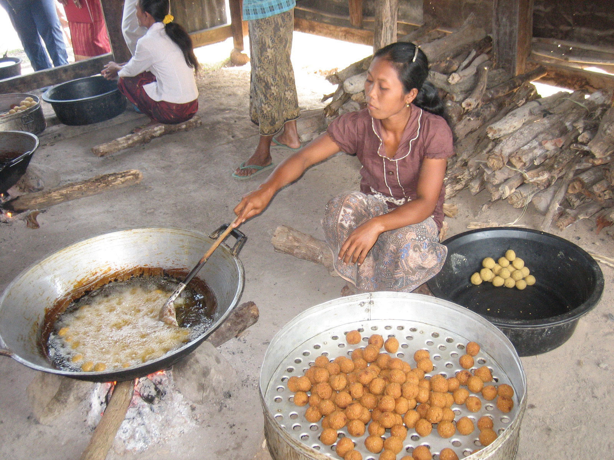
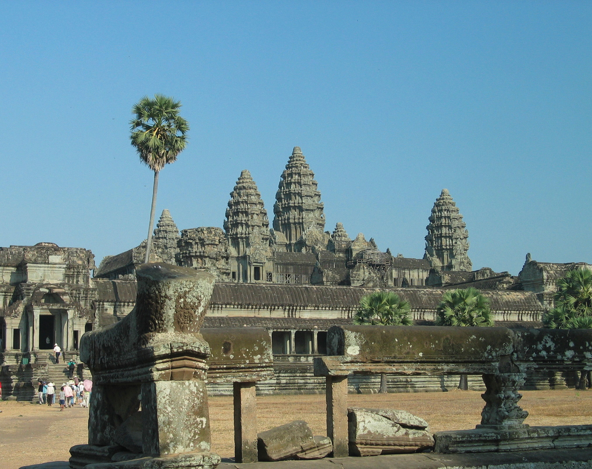
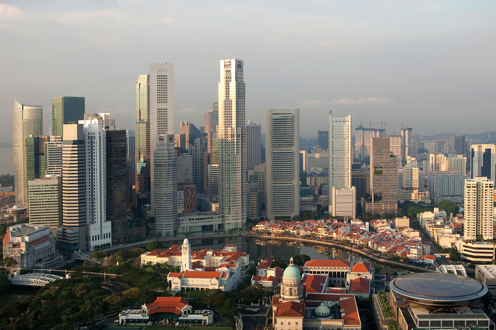
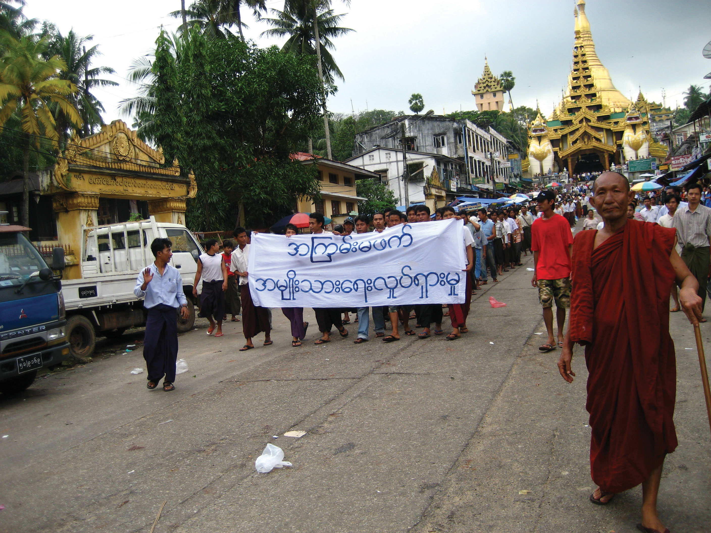

At a Glance
At a Glance
Learning Outcomes
- Analyze: Distinguish the physical and cultural differences between Mainland and Insular Southeast Asia.
- Analyze: Examine the strategic importance of the Strait of Malacca and the South China Sea for global trade.
- Understand: Explain the role of ASEAN in maintaining regional stability and economic cooperation.
- Evaluate: Assess the environmental cost of palm oil deforestation and the loss of tropical biodiversity.
- Apply: Apply the concept of a Shatter Belt to the region's colonial and Cold War history.
Key Terms
Shatter Belt, ASEAN, Archipelago, Entrepot, Transshipment, Domino Theory, Exclusive Economic Zone (EEZ), Primate City, Doi Moi, Ring of Fire, Monsoon, Insular Southeast Asia, Golden Triangle, Transmigration.
Stop & Check
Reveal Answer
Common Misconception
Myth: Southeast Asia is culturally homogeneous.
Fact: It is one of the most diverse regions on Earth. It includes the Catholic Philippines, Islamic Indonesia, Buddhist Thailand and Myanmar, Hindu Bali, and secular Singapore, all intersecting in a geographic "crossroads" shaped by Indian, Chinese, Arab, and European influences over two millennia.
Regional Snapshot: The Tropical Realm
Southeast Asia is a "shatter belt" region, historically caught between the influence of India and China (hence the term "Indochina"). It is physically divided into a mainland peninsula comprising Vietnam, Thailand, Laos, Cambodia, and Myanmar, and a vast island realm that includes Indonesia, the Philippines, Malaysia, Singapore, Brunei, and Timor-Leste. This dual character, part continental and part maritime, gives the region an extraordinary range of physical environments and cultural traditions. With a combined population exceeding 680 million, Southeast Asia is home to more people than Europe or Latin America, and its collective economy has grown rapidly in recent decades as nations leverage their strategic position along some of the world's busiest shipping lanes.

Interactive Map: Southeast Asia
Explore the complex geography of the region. Note the strategic position of Singapore at the tip of the Malay Peninsula and the dense clustering of cities along the coasts. Observe how the Mekong River creates a corridor for settlement on the mainland, while volcanic chains define the islands of the insular realm.
Toggle between Physical terrain and Political boundaries. Observe how the Mekong River creates a corridor for settlement in the mainland and how the Strait of Malacca funnels maritime traffic between Sumatra and the Malay Peninsula.
Physical Geography: Rainforests and Volcanoes
The physical geography of Southeast Asia is defined by its tropical location, its position along the Pacific Ring of Fire, and the great rivers that flow from the Himalayan highlands to fertile deltas along the coast. Understanding these physical foundations is essential because they determine where people settle, what they grow, how they trade, and which natural hazards they must endure. The region spans approximately 35 degrees of longitude and straddles the equator, placing it squarely within the tropics and exposing it to intense solar radiation, abundant rainfall, and some of the most biologically productive ecosystems on the planet.


Mainland vs. Insular: Two Geographic Realms
Geographers divide Southeast Asia into two distinct sub-regions. Mainland Southeast Asia (sometimes called the Indochinese Peninsula) includes Vietnam, Laos, Cambodia, Thailand, and Myanmar. This sub-region is characterized by north-south trending mountain ranges separated by broad river valleys. The mountains, which are southern extensions of the Himalayan system, historically created barriers between population groups, while the rivers served as corridors for migration, trade, and cultural diffusion. Settlement concentrates in the fertile lowlands and deltas, where rice cultivation has supported dense populations for centuries.
Insular Southeast Asia (the maritime realm) includes Indonesia, the Philippines, Malaysia, Singapore, Brunei, and Timor-Leste. This sub-region is defined by its archipelagic character: Indonesia alone consists of over 17,000 islands, while the Philippines comprises more than 7,600. The South China Sea separates the mainland from the insular realm and has historically functioned as both a connector and a barrier, facilitating trade across its waters while creating distinct cultural zones on its shores. The insular realm's physical geography is dominated by volcanic mountains, narrow coastal plains, and dense tropical rainforest. Governing an archipelagic state presents unique challenges, as central authorities must maintain cohesion across thousands of scattered islands, each with its own local identity and, in many cases, its own language.
Tropical Climate and Monsoons
The entire region lies within the tropics, and most of it experiences a tropical Type A climate characterized by high temperatures and abundant rainfall throughout the year. Average temperatures rarely fall below 25 degrees Celsius (77 degrees Fahrenheit), and annual precipitation totals often exceed 2,000 millimeters. Near the equator, in places like Singapore and central Borneo, the climate is classified as tropical rainforest (Af), with no distinct dry season and rain falling in every month. Further from the equator, on the mainland and in the northern Philippines, the climate shifts to tropical monsoon (Am) or tropical savanna (Aw), with a pronounced wet season driven by the southwest monsoon from May to October and a drier period brought by the northeast monsoon from November to March.
The monsoon system is the dominant climatic mechanism of the region. During the Northern Hemisphere summer, the Asian landmass heats up and draws moist air from the Indian Ocean and the South China Sea, bringing heavy rains to the mainland and the western coasts of the islands. During winter, the pattern reverses, and drier air flows from the continental interior toward the sea. This seasonal rhythm determines agricultural cycles, especially the planting and harvesting of rice, the staple crop of the region. The insular realm also lies within the western Pacific typhoon corridor. The Philippines is the most typhoon-prone country in the world, experiencing an average of twenty tropical cyclones per year, of which several reach devastating intensity. Super Typhoon Haiyan (Yolanda) in 2013 killed more than 6,000 people and displaced millions, underscoring the vulnerability of coastal populations to extreme weather events.
Volcanic Activity and the Ring of Fire
Insular Southeast Asia sits along the Pacific Ring of Fire, one of the most tectonically active zones on Earth. The Indo-Australian Plate is subducting beneath the Eurasian Plate along the Sunda Trench, and the Philippine Sea Plate is colliding with the Eurasian Plate along the Philippine Trench. These convergent plate boundaries produce frequent earthquakes and a dense concentration of active volcanoes. Indonesia alone has approximately 130 active volcanoes, more than any other country on the planet.
The consequences of this tectonic activity have been both catastrophic and beneficial. The eruption of Krakatoa (Krakatau) in 1883 was one of the most violent volcanic events in recorded history, generating a tsunami that killed more than 36,000 people and ejecting ash into the stratosphere that lowered global temperatures for more than a year. More recently, the eruption of Mount Pinatubo in the Philippines in 1991 was the second-largest volcanic eruption of the twentieth century, displacing hundreds of thousands and similarly cooling global temperatures. The devastating 2004 Indian Ocean earthquake and tsunami, which originated off the coast of Sumatra, killed approximately 230,000 people across fourteen countries and remains one of the deadliest natural disasters in modern history.
Despite these hazards, volcanic soils are among the most fertile on Earth. The island of Java, one of the most densely populated places in the world, owes its agricultural productivity to the rich volcanic ash deposited by its numerous active volcanoes. This paradox, in which the same tectonic forces that create catastrophic hazards also sustain dense human settlement, is a central theme of the region's physical geography.
Biodiversity Hotspots
Southeast Asia contains four of the world's thirty-six recognized biodiversity hotspots, including Sundaland (the Malay Peninsula, Sumatra, Java, and Borneo), Wallacea (Sulawesi and the Maluku Islands), the Philippines, and Indo-Burma (the mainland). The region's tropical rainforests harbor an extraordinary concentration of species. Borneo alone is home to more than 15,000 plant species, 222 mammal species, and 420 bird species. The region's coral reefs, particularly the Coral Triangle spanning Indonesia, Malaysia, the Philippines, Papua New Guinea, the Solomon Islands, and Timor-Leste, contain the highest marine biodiversity on Earth, with over 600 species of reef-building coral and more than 2,000 species of reef fish.
However, this biodiversity faces unprecedented threats. Deforestation for palm oil plantations, timber extraction, and agricultural expansion has made Southeast Asia the region with the highest rate of tropical forest loss in the world. Indonesia and Malaysia together produce approximately 85 percent of the world's palm oil, a commodity found in roughly half of all supermarket products, from cooking oil and margarine to shampoo and cosmetics. The conversion of primary rainforest to oil palm monocultures has devastated habitat for critically endangered species, including the Sumatran orangutan, the Sumatran tiger, and the Bornean pygmy elephant. The burning of peatland forests to clear land for plantations releases massive quantities of stored carbon, making Indonesia one of the world's largest greenhouse gas emitters during severe fire years. The transboundary haze from these fires periodically blankets Singapore, Malaysia, and southern Thailand, creating public health emergencies and straining diplomatic relations.
River Systems and Deltas
The great rivers of mainland Southeast Asia are the lifelines of the sub-region. The Mekong River, at approximately 4,350 kilometers, is the longest river in the region and the twelfth longest in the world. It originates on the Tibetan Plateau and flows through China's Yunnan Province before forming sections of the border between Myanmar and Laos, then between Laos and Thailand, before passing through Cambodia and southern Vietnam, where it fans out into a vast delta. The Mekong Basin supports over 60 million people and sustains one of the world's most productive freshwater fisheries, providing the primary source of protein for millions of Cambodians and Vietnamese.
The Irrawaddy River is the principal watercourse of Myanmar, flowing approximately 2,170 kilometers from the mountains of Kachin State in the north to a wide delta on the Andaman Sea. The Irrawaddy Valley is Myanmar's agricultural heartland, producing the majority of the country's rice crop. The Chao Phraya River is the central artery of Thailand, draining the fertile central plain and flowing through Bangkok to the Gulf of Thailand. Its basin is the most productive rice-growing area in Thailand, and the river itself has served as the primary transportation corridor for Thai civilization since the ancient kingdom of Ayutthaya.
These river deltas are among the most agriculturally productive landscapes on Earth, supporting multiple annual rice harvests and feeding hundreds of millions of people. However, they are also among the most vulnerable. The Mekong Delta, which produces half of Vietnam's rice and most of its seafood exports, is sinking due to groundwater extraction, sediment starvation caused by upstream dams, and rising sea levels. Scientists estimate that large portions of the delta could be submerged by 2050, which would create a humanitarian and food security crisis of staggering proportions.
Geographic Inquiry
Singapore is an island city-state with no natural resources; it even imports fresh water from Malaysia. How has it managed to become one of the wealthiest nations on Earth purely through its geographic location and human capital? Consider the concepts of entrepot trade, transshipment, and the strategic value of controlling a choke point.
Human Geography: ASEAN and Diversity
The human geography of Southeast Asia is shaped by two millennia of cultural exchange, colonial exploitation, Cold War conflict, and, most recently, rapid economic development and urbanization. With over 680 million people speaking hundreds of languages and practicing every major world religion, the region is one of the most culturally complex on Earth. Understanding this complexity requires examining the layers of influence that have accumulated over centuries and the contemporary forces that are reshaping the region today.


Cultural Crossroads: Indian and Chinese Influence
Southeast Asia has functioned as a cultural crossroads for over two thousand years, absorbing and adapting influences from India, China, the Arab world, and, later, Europe. The term "Indochina" itself reflects the region's position between these two great civilizations. Indianization began in the early centuries of the Common Era, as Indian traders, monks, and scholars brought Hinduism, Buddhism, Sanskrit writing systems, and concepts of divine kingship to the courts of Southeast Asian rulers. The great temple complexes of Angkor Wat (Cambodia), Borobudur (Java), and Prambanan (Java) are enduring monuments to this cultural exchange. Theravada Buddhism, which emphasizes monastic discipline and individual enlightenment, became the dominant religion of mainland Southeast Asia and remains the majority faith in Thailand, Myanmar, Laos, and Cambodia today.
Chinese influence was equally profound, particularly in Vietnam, which was under direct Chinese imperial rule for over a thousand years. Chinese administrative systems, Confucian philosophy, Mahayana Buddhism, and the Chinese writing system all left deep marks on Vietnamese culture. Throughout the insular realm, overseas Chinese merchants established trading networks that linked Southeast Asian ports to the wider Chinese economy. Today, ethnic Chinese communities, numbering more than 30 million across the region, play a disproportionately influential role in business and commerce, particularly in Thailand, Malaysia, Indonesia, and the Philippines. This economic influence has sometimes generated resentment and, in extreme cases, anti-Chinese violence, as during the Indonesian riots of 1998.
Islam arrived in the maritime realm primarily through Arab and Indian Muslim traders along the Maritime Silk Road, beginning around the thirteenth century. It spread through the port cities of the Malay Peninsula, Sumatra, and Java, eventually becoming the dominant religion of Indonesia, Malaysia, and Brunei. Notably, Islam in Southeast Asia developed a distinctly syncretic character, blending with pre-existing Hindu, Buddhist, and animist traditions. The Philippines, colonized by Spain in the sixteenth century, became the only predominantly Christian nation in Asia, with Roman Catholicism practiced by roughly 80 percent of the population today.
Colonial Legacy and Independence
European colonialism reshaped Southeast Asia between the sixteenth and twentieth centuries, drawing new political boundaries, extracting natural resources, and imposing foreign administrative systems. The colonial powers carved the region into spheres of influence with little regard for existing ethnic or cultural boundaries, creating political legacies that continue to shape the region today.
France established colonial control over Vietnam, Laos, and Cambodia, collectively known as French Indochina, during the second half of the nineteenth century. French rule imposed the French language, Catholic missionaries, and a plantation economy focused on rubber and rice exports. The Netherlands controlled the vast Indonesian archipelago as the Dutch East Indies for over three centuries, exploiting the Spice Islands for cloves, nutmeg, and pepper, and later developing plantation agriculture for sugar, coffee, and rubber. Spain colonized the Philippines from 1565 until 1898, when it ceded the islands to the United States following the Spanish-American War. American colonial rule introduced English-language education, democratic institutions, and Protestant Christianity alongside the existing Catholic faith. Britain controlled Burma (Myanmar), Malaya (peninsular Malaysia), Singapore, and the northern Borneo territories of Sarawak, Sabah, and Brunei, developing tin mining and rubber plantations as the foundations of the colonial economy.
Thailand (then Siam) was the only Southeast Asian nation to avoid European colonization entirely. Its rulers skillfully played the French and British empires against each other, ceding peripheral territories while maintaining sovereignty over the core kingdom. This unique history gives Thailand a distinctive national identity and a monarchy that remains a powerful unifying symbol.
Independence came to most of the region in the aftermath of World War II, often after bitter struggles against the returning colonial powers. Vietnam's war against France (1946 to 1954) and its subsequent conflict with the United States (the Vietnam War, 1955 to 1975) were among the most consequential events of the Cold War era. The Domino Theory, the belief that if one country fell to communism its neighbors would follow, drove American intervention and resulted in devastating consequences for Vietnam, Laos, and Cambodia. Indonesia declared independence in 1945 and fought a four-year war against the Dutch before sovereignty was recognized in 1949. The Philippines gained independence from the United States in 1946, and Myanmar from Britain in 1948. Timor-Leste, a former Portuguese colony annexed by Indonesia in 1975, became the region's newest independent state in 2002 after a violent independence struggle.
ASEAN and Regional Integration
The Association of Southeast Asian Nations (ASEAN) was founded in 1967 by Indonesia, Malaysia, the Philippines, Singapore, and Thailand, primarily as a mechanism for managing Cold War tensions and preventing communist expansion. Over the following decades, ASEAN expanded to include all ten Southeast Asian nations (Brunei joined in 1984, Vietnam in 1995, Laos and Myanmar in 1997, and Cambodia in 1999). Today, ASEAN represents a combined economy of approximately $3.6 trillion, making it the fifth-largest economy in the world if counted as a single unit.
ASEAN operates on the principle of non-interference in members' internal affairs, a doctrine known as the "ASEAN Way." This consensus-based approach has enabled cooperation among politically diverse nations, from communist Vietnam and Laos to democratic Indonesia and the Philippines, and from wealthy Singapore to impoverished Myanmar. The ASEAN Economic Community (AEC), launched in 2015, aims to create a single market and production base with free movement of goods, services, investment, and skilled labor. However, ASEAN faces significant challenges, including wide economic disparities among members (Singapore's per capita GDP is roughly fifty times that of Myanmar), territorial disputes in the South China Sea, and criticism that its non-interference principle prevents the bloc from addressing human rights abuses within member states.
The Tiger Economies
Several Southeast Asian nations have achieved remarkable economic transformations in recent decades, earning comparisons to the earlier "Asian Tiger" economies of South Korea, Taiwan, Hong Kong, and Singapore. Singapore is the most dramatic example: a tiny city-state with no natural resources that now boasts one of the highest per capita GDPs in the world, a globally competitive financial sector, and a world-class port that handles more shipping containers than any facility in the Western Hemisphere. Singapore's success is often attributed to its strategic location, its investment in education and human capital, its strict rule of law and anticorruption measures, and its openness to foreign investment and trade.
Vietnam has emerged as one of the fastest-growing economies in the region following the adoption of Doi Moi ("Renovation") reforms in 1986. These reforms shifted the country from a centrally planned economy to a "socialist-oriented market economy," opening Vietnam to foreign investment, private enterprise, and global trade. Vietnam has become a major exporter of textiles, electronics, and seafood, and it has attracted significant foreign direct investment from companies seeking alternatives to Chinese manufacturing. Thailand and Malaysia industrialized earlier, developing automotive manufacturing, electronics assembly, and petrochemicals industries. Thailand is the largest automobile manufacturer in Southeast Asia and a major global exporter of rice, rubber, and processed foods. Malaysia has diversified from its colonial-era dependence on tin and rubber into electronics, petroleum products, and palm oil, and its national development plan, Vision 2020, aimed (with mixed success) to achieve developed-nation status.
Despite these successes, the region's economic growth has been uneven. Myanmar, Laos, and Cambodia remain among the poorest countries in Asia, with large rural populations dependent on subsistence agriculture and limited access to education, healthcare, and infrastructure. The Asian Financial Crisis of 1997-1998 exposed the vulnerability of the region's economies to speculative capital flows and inadequate financial regulation, devastating Thailand, Indonesia, and Malaysia before a painful recovery.
Urbanization and Megacities
Southeast Asia is urbanizing at a rapid pace, and several of its cities have grown into sprawling megacities that face enormous challenges related to infrastructure, housing, transportation, and environmental sustainability. Jakarta, the capital of Indonesia with a metropolitan population exceeding 30 million, is one of the fastest-sinking cities in the world due to excessive groundwater extraction, and it faces severe flooding, traffic congestion, and air pollution. The Indonesian government has announced plans to relocate the national capital to a new city called Nusantara on the island of Borneo, a decision driven largely by Jakarta's environmental unsustainability.
Manila, the capital of the Philippines, is one of the most densely populated cities on Earth, with severe inequality visible in the contrast between gleaming business districts and sprawling informal settlements. Bangkok, Thailand's capital, is a classic primate city, a city that is disproportionately larger and more economically dominant than any other city in its country. Bangkok's population is roughly thirty times that of Thailand's second-largest city, Chiang Mai, and it generates nearly half of the country's GDP. Ho Chi Minh City (formerly Saigon) is Vietnam's largest city and economic engine, its streets a sea of motorbikes and construction cranes as the country's rural-to-urban shift accelerates.
Across the region, urbanization brings both opportunity and crisis. Cities attract rural migrants with the promise of employment in factories, construction, and services, but many newcomers end up in informal settlements lacking clean water, sanitation, and secure housing. Traffic congestion in cities like Jakarta and Manila costs billions of dollars in lost productivity annually. Air and water pollution threaten public health, and the conversion of agricultural land on the urban fringe reduces food production capacity. Managing this urban transition is one of the defining challenges of twenty-first-century Southeast Asia.
The Golden Triangle
The Golden Triangle refers to the mountainous border area where Thailand, Laos, and Myanmar converge, a remote tripoint region historically notorious as the world's largest opium-producing zone. For much of the twentieth century, the rugged terrain and weak central governance in this area allowed poppy cultivation and heroin production to flourish under the control of warlords, ethnic militias, and transnational criminal networks. By the 1990s, Thailand launched aggressive crop substitution programs supported by the Thai royal family, replacing opium with coffee, tea, and macadamia nut cultivation in the northern highlands. These programs dramatically reduced Thai opium production and are widely regarded as a development success story. However, production shifted across the border into Myanmar's Shan State, where ongoing civil conflict and limited state authority continue to provide shelter for narcotics operations. In recent decades, the Golden Triangle's criminal economy has pivoted from opium and heroin toward synthetic drugs, particularly methamphetamine. The region now produces the majority of the world's methamphetamine supply, with pills and crystal meth flooding markets across Southeast and East Asia. The Golden Triangle illustrates a recurring geographic theme: remote border zones with weak governance become spaces where illicit economies thrive, and suppressing production in one location often displaces it to another.
Indonesia's Transmigration Program
Indonesia's Transmigration (transmigrasi) program was one of the largest government-sponsored population resettlement initiatives in modern history. Launched under the New Order government of President Suharto in 1969 and continuing into the early 2000s, the program relocated millions of people from the densely populated inner islands of Java and Bali to less populated outer islands, including Sumatra, Kalimantan (Borneo), Sulawesi, and Papua. Java, which contains only about 7 percent of Indonesia's land area, is home to over half its population, with densities exceeding 1,200 people per square kilometer in some regions. The stated goals of transmigration were to relieve population pressure on Java, promote economic development in the outer islands, and strengthen national integration across the vast archipelago. In practice, the program produced deeply mixed results. It contributed to extensive deforestation as migrants cleared tropical rainforest for farming, particularly in Kalimantan and Sumatra. Transmigrant settlements frequently came into conflict with indigenous communities over land rights, resource access, and cultural differences. In several provinces, tensions between Javanese settlers and local populations erupted into violence, most notably in Kalimantan and Papua. Although the formal program was largely discontinued after the fall of Suharto in 1998, its legacy endures in the altered demographic patterns of the outer islands, in ongoing land disputes, and in the environmental degradation of some of Indonesia's most biodiverse landscapes.
Data Exploration: Deforestation in Southeast Asia
Southeast Asia has some of the world's highest deforestation rates, driven by palm oil, timber, and agricultural expansion. The chart below shows forest cover loss (percentage of original forest remaining) for major Southeast Asian nations. This data connects directly to biodiversity loss, carbon emissions, and the livelihoods of millions of forest-dependent communities. Countries shaded in red have lost more than half their original forest cover, representing critical thresholds for ecosystem collapse.
Interpretation: Indonesia and Malaysia have lost the largest share of their original forest cover, driven primarily by palm oil expansion. How does the geography of tropical rainforests (concentrated in island and equatorial regions) make them both ecologically irreplaceable and economically tempting to exploit? Who benefits from deforestation and who bears the cost?
The South China Sea: Waters of Conflict
The South China Sea is one of the world's busiest trade routes, carrying an estimated $5.3 trillion in annual shipping commerce, and it is potentially rich in oil and natural gas reserves. China claims almost the entire sea under its so-called "Nine-Dash Line," a sweeping territorial claim that conflicts with the maritime zones of Vietnam, the Philippines, Malaysia, Brunei, and Taiwan. In 2016, an international tribunal at The Hague ruled that China's claims had no legal basis under the United Nations Convention on the Law of the Sea (UNCLOS), but China rejected the ruling and has continued to build artificial islands, military installations, and airstrips on disputed reefs and shoals. The dispute threatens freedom of navigation, disrupts fishing rights for millions of Southeast Asian fishermen, and challenges ASEAN's ability to present a unified front against a much more powerful neighbor.
Questions to Consider:
- Why is control over small, uninhabited islands (like the Spratlys and Paracels) so strategically important? Consider the concept of Exclusive Economic Zones (EEZs) under UNCLOS, which grant sovereign rights over resources within 200 nautical miles of a coastline.
- How does this dispute challenge ASEAN's unity, given that some members (like Cambodia) have close economic ties to China while others (like Vietnam and the Philippines) are directly threatened by Chinese expansion?
- Archipelago
- A chain or group of islands. Indonesia and the Philippines are archipelagic states, which creates challenges for national connectivity, governance, and cultural unity.
- ASEAN (Association of Southeast Asian Nations)
- A regional intergovernmental organization of ten Southeast Asian nations promoting economic cooperation, political stability, and cultural exchange, founded in 1967.
- Doi Moi
- Vietnamese term meaning "Renovation," referring to the economic reforms initiated in 1986 that transitioned Vietnam from a centrally planned economy to a socialist-oriented market economy.
- Domino Theory
- A Cold War belief that if one country in a region fell to communism, neighboring countries would follow in a chain reaction. This theory drove American military intervention in Vietnam.
- Entrepot
- A port city (such as Singapore) where goods are imported, stored, and re-exported without significant processing. It functions as a trading hub rather than a production center.
- Exclusive Economic Zone (EEZ)
- Under UNCLOS, the maritime zone extending 200 nautical miles from a nation's coastline, within which that nation has sovereign rights over natural resources, including fish and seabed minerals.
- Insular Southeast Asia
- The maritime sub-region of Southeast Asia comprising the island and peninsular nations: Indonesia, the Philippines, Malaysia, Singapore, Brunei, and Timor-Leste.
- Monsoon
- A seasonal reversal of wind direction that brings wet and dry seasons to tropical and subtropical regions. The southwest monsoon brings heavy rainfall to Southeast Asia from May to October.
- Overseas Chinese
- Ethnic Chinese populations living outside of China. Numbering over 30 million in Southeast Asia, they play a disproportionately influential role in the region's business and commerce.
- Palm Oil
- An edible vegetable oil derived from the fruit of the oil palm tree, predominantly produced in Indonesia and Malaysia. Its cultivation is a primary driver of tropical deforestation in the region.
- Primate City
- A city that is disproportionately larger and more economically dominant than any other city in the country. Bangkok, Manila, and Jakarta are classic examples in Southeast Asia.
- Ring of Fire
- A horseshoe-shaped zone of intense volcanic and seismic activity encircling the Pacific Ocean, where tectonic plates converge. Insular Southeast Asia lies along this zone.
- Shatter Belt
- A region caught between stronger, colliding external cultural-political forces, under persistent stress and often fragmented by aggressive rivals (e.g., Southeast Asia during the Cold War).
- Golden Triangle
- The mountainous border region where Thailand, Laos, and Myanmar meet, historically the world's largest opium-producing area and now a major source of methamphetamine production, sustained by weak governance and transnational criminal networks.
- Transmigration
- An Indonesian government program (1969 to early 2000s) that relocated millions of people from densely populated Java and Bali to outer islands such as Sumatra, Kalimantan, and Papua, with significant environmental and social consequences.
- Transshipment
- The process of transferring cargo from one vessel or mode of transport to another at an intermediate destination. Singapore is the world's largest transshipment hub.
- Two Realms: Southeast Asia is divided into Mainland (continental) and Insular (maritime) sub-regions, each with distinct physical landscapes, settlement patterns, and cultural traditions shaped by mountains, rivers, and island geography.
- Tropical Climate and Monsoons: The monsoon system governs agricultural cycles across the region, while the insular realm's position in the typhoon corridor creates recurring hazards for coastal populations.
- Ring of Fire: Tectonic activity along convergent plate boundaries produces both devastating natural hazards (earthquakes, tsunamis, volcanic eruptions) and exceptionally fertile volcanic soils that support dense human settlement.
- Biodiversity Crisis: Southeast Asia contains some of the world's richest biodiversity hotspots, but deforestation for palm oil, timber, and agriculture threatens irreplaceable ecosystems and contributes significantly to global carbon emissions.
- Cultural Crossroads: Two millennia of Indian, Chinese, Arab, and European influence created a mosaic of religions (Buddhism, Islam, Christianity, Hinduism) and cultural traditions that defines the region's complexity.
- Colonial Legacy: European colonialism (French, Dutch, British, Spanish, and American) redrew political boundaries and extracted resources, leaving legacies that continue to shape national identities and interstate relations.
- ASEAN Integration: The Association of Southeast Asian Nations fosters economic cooperation and political dialogue among diverse members, but faces challenges from economic inequality, territorial disputes, and the non-interference principle.
- Economic Tigers: Countries like Singapore, Vietnam, Thailand, and Malaysia have achieved remarkable economic growth through strategic location, export-oriented industrialization, and foreign investment, though development remains uneven across the region.
- Urbanization Challenges: Megacities like Jakarta, Manila, and Bangkok face critical challenges including flooding, traffic congestion, pollution, informal settlements, and the need for sustainable infrastructure development.
- Illicit Economies and Borders: The Golden Triangle, at the tripoint of Thailand, Laos, and Myanmar, illustrates how remote border regions with weak governance become hubs for narcotics production, shifting from opium to methamphetamine in recent decades.
- Population Redistribution: Indonesia's Transmigration program resettled millions from overcrowded Java to outer islands, achieving demographic redistribution but at significant environmental and social cost, including deforestation and conflicts with indigenous communities.
The Mekong River: Dams, Fish, and Downstream Nations
The Mekong River flows 4,350 km from the Tibetan Plateau through China, Myanmar, Laos, Thailand, Cambodia, and Vietnam before emptying into the South China Sea. China has built eleven mega-dams on the upper Mekong, and Laos is building more on its portion of the river. These dams generate electricity and revenue for upstream nations, but they are devastating fish populations, trapping sediment, and altering the seasonal flood cycles that millions of downstream farmers and fishermen depend on for their livelihoods.
Role A: Laos ("Battery of Southeast Asia")
You are one of the poorest countries in the region. Selling hydroelectric power to Thailand and China is your primary path to development and poverty reduction. You argue that your dams are built to international safety standards and that your sovereign right to develop your own rivers cannot be denied by wealthier downstream nations.
Role B: Cambodia
The Tonle Sap Lake, the heart of your food security, is fed by the Mekong's seasonal flood pulse. Upstream dams are disrupting this cycle, devastating fish catches that provide 80 percent of your population's animal protein. You demand compensation, minimum flow guarantees, and a voice in upstream dam decisions.
Role C: Vietnam (Mekong Delta)
Your Mekong Delta produces half of Vietnam's rice and most of its seafood exports. Reduced sediment flow from upstream dams is causing the delta to subside and saltwater to intrude into farmland. You want binding international agreements on dam operations, environmental impact assessments, and a framework for transboundary water sharing.
Role D: Mekong River Commission
You are the regional body tasked with managing the shared river. You have scientific data and technical expertise but no enforcement power. You must propose a framework that balances upstream development rights with downstream survival needs, knowing that China, the most powerful upstream actor, is not a full member of your commission.
Knowledge Check
Test your understanding of the core concepts covered in this chapter. This quiz consists of multiple-choice questions designed to review key terms, regional patterns, and geographic relationships. Select the best answer for each question to receive immediate feedback.
Loading quiz questions...
Discussion and Reflection Prompts
Reflect on Your Learning
- ASEAN's Limits: ASEAN operates on the principle of non-interference in member states' internal affairs. How does this geographic and political principle both enable cooperation among diverse nations and prevent the bloc from addressing human rights abuses or territorial disputes effectively?
- Archipelago Geography: Southeast Asia is the world's largest archipelago region. How does being divided into thousands of islands shape national identity, language diversity, and the challenges of governance in countries like Indonesia and the Philippines?
- Deforestation and Palm Oil: Indonesia and Malaysia produce 85 percent of the world's palm oil. How does the geography of tropical rainforests create both economic opportunity and environmental destruction? Who benefits from palm oil production and who bears the ecological and health costs?
Discuss With Your Peers
- Singapore is a tiny city-state with no natural resources, yet it has one of the highest GDPs per capita in the world. How did its geographic position at the tip of the Malay Peninsula make it the world's busiest port and a global financial center? Could the "Singapore Model" be replicated elsewhere?
- Vietnam fought wars against France, the United States, and China, yet today it is one of the fastest-growing economies in Asia with strong trade ties to all three former adversaries. How does geography (long coastline, strategic location, young population) explain this economic transformation?
- Myanmar's military coup in 2021 triggered a civil war. How does the country's geography (ethnic minorities controlling mountainous border regions, the Irrawaddy Valley as the economic core, and proximity to China and India) shape the conflict and international responses to it?
Curriculum Standards Alignment
This chapter aligns with the following National and State geography standards.